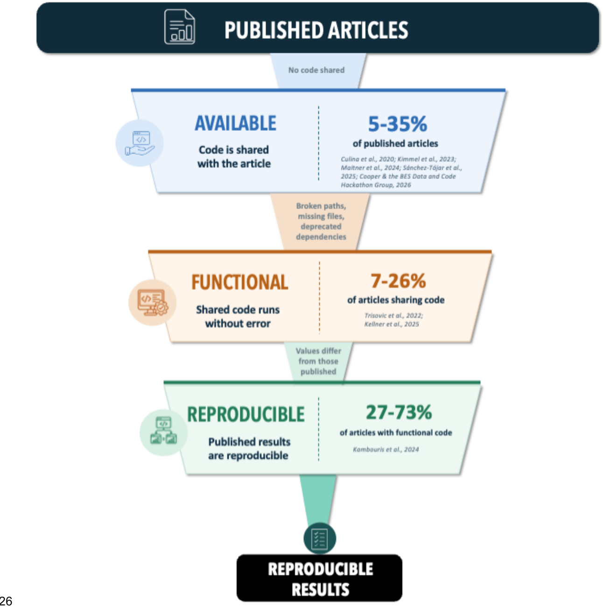
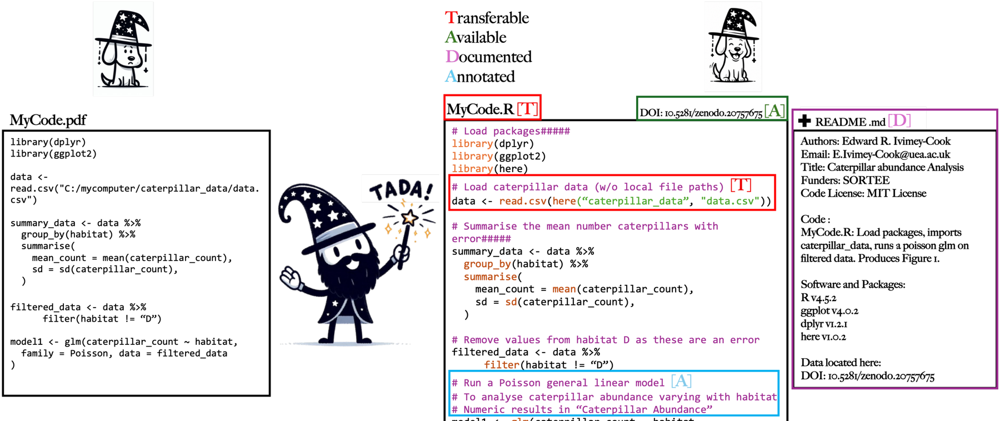

2 TADA at a glance
Transferable, Available, Documented, Annotated. Four steps that take analytical code from a working copy on one machine to an archived record that another researcher can run.
2.1 Why another set of guidelines?
There is plenty of advice on writing good code, but little of it covers archiving an analysis. In the TADA paper (Ivimey-Cook et al. 2025) we identified four gaps in the existing resources:
- They do not sufficiently address how to archive analytical code.
- Few of them adhere to the FAIR principles.
- They do not align with journal requirements.
- They are complex and developed mainly for software development. Even FAIR4RS (the FAIR principles for Research Software; Barker et al. 2022; Chue Hong et al. 2022) is broad in scope and focused on software development, which may be part of why it has not been widely adopted outside that community.
The fourth gap depends on the difference between analytical code and software.
Software is written to be general, modular and tested, and to work across systems with many different compatible datasets. Designing for that kind of reuse is hard.
Analytical code is tailored to one dataset and one study. Its purpose is to be a transparent, reproducible record of that analysis, not to become a tool for other people.
Software standards therefore set too high a bar for analytical code, and researchers faced with an unrealistic target tend to give up on it. TADA instead sets a minimum standard that anyone can meet, whatever their coding experience, and that still gives the transparency and computational reproducibility that sharing is for.
2.2 The scale of the problem
All the figures below come from our literature review in the TADA paper (Ivimey-Cook et al. 2025).
| What | Figure | Primary source |
|---|---|---|
| Journals in ecology & evolutionary biology with code-sharing policies | 15% in 2015, rising to 88% in 2024 | Mislan et al. 2016; Culina et al. 2020; Ivimey-Cook et al. 2025 |
| Articles in the field with open code | 5–35%, depending on the study | Culina et al. 2020; Kimmel et al. 2023; Maitner et al. 2024; Kellner et al. 2025; Sánchez-Tójar et al. 2025; Cooper & the BES Data and Code Hackathon Group 2026 |
| Archived R files in Harvard Dataverse failing to run without error | 74%, falling to 56% after automated cleaning | Trisovic et al. 2022 |
| Scripts in species distribution and abundance papers that did not run, or ran with errors | 93% | Kellner et al. 2025 |
| Meta-analyses computationally reproducible given working data and code | between 27% (every result matching exactly) and 73% (half of results within 10%) | Kambouris et al. 2024 |

The code-sharing cascade. Reproducible results depend on code that is available (shared with the article) and functional (runs without error). Figure 1 from Ivimey-Cook et al.
Journal policy has changed a lot over the past decade, but practice has been much slower to follow (Ivimey-Cook et al. 2025). Even where code is present and runs, computational reproducibility cannot be assumed (Kambouris et al. 2024).
2.3 The four principles
Each has its own chapter. Here is each in a paragraph.
T Transferable Anyone can open the file, view it and run it without conversion or alteration, on a different computer and a different operating system. Standard file extensions, and no local file paths.
A Available The code is publicly archived so that any external user has long-term access to it, with a globally unique persistent identifier such as a DOI that is cited in the manuscript.
D Documented Accurate, detailed metadata, typically a README, describing the code files and their usage: environment, versions, licence, where the data are, and what runs in what order.
A Annotated Comments inside the code, or code embedded in RMarkdown or Quarto alongside descriptive text, explaining what each chunk does, why it is needed and where its output appears in the paper.
Figure 2 below applies all four to a small piece of generic R code, showing the same script before and after.

TADA applied to analytical code written in R. A pre-TADA script (left) and a post-TADA script (right); coloured letters mark which guideline each change addresses: Transferable (red), Available (green), Documented (purple), Annotated (blue). The code shown is generic, designed only to illustrate the guidelines. Figure 2 from Ivimey-Cook et al.
2.4 What TADA does not cover
We left three things out of TADA’s scope on purpose, although all three support reproducible analyses (Ivimey-Cook et al. 2025):
-
Dependency and environment managers (renv in R,
{conda}in Python), which help ensure the same computational environment is used each time, for example via a lockfile. - Containerisation (Docker, Apptainer — formerly Singularity), which packages a complete software environment of programs and libraries into an image, so the environment itself is reproducible between systems. It is the standard answer to the “works on my computer” problem.
- Workflow managers (Snakemake, Nextflow), which specify the sequence of scripts or computational steps in a pipeline and their dependencies, so that each step executes in a defined, reproducible order.
None of these is a TADA requirement, but all three are worth knowing about. See Further reading.
2.5 How TADA maps onto FAIR
TADA was built with the FAIR (Wilkinson et al. 2016) and FAIR4RS (Chue Hong et al. 2022) principles in mind. Each letter maps onto one or more of them, and Transferable goes further on purpose.
| FAIR principle | Definition | Covered by |
|---|---|---|
| Findable | Digital assets (metadata, data, code) can be easily found by both machines and humans | Available, through the provision of a unique identifier, and Documented, through the provision of rich metadata |
| Accessible | Assets are retrievable via their identifier, with or without authorisation or authentication | Available, since the code is retrievable via that identifier |
| Interoperable | Assets can interoperate with other assets, and are readable using standard documented formats | Transferable, extended to also mean runnable on different computers and operating systems |
| Reusable | Assets are described sufficiently to enable reuse and attribution, ideally via a licence | Documented, through a README and a licence, and Annotated, through commenting within the code itself |
All four rows come from the TADA paper, where we wrote that Transferable “corresponds to the FAIR principle of interoperability… and extends it”; Available “corresponds to the FAIR principles of both Findable… and Accessible”; Documented “corresponds to… the FAIR principle of Reusable… and Findable (the provision of rich metadata)”; and Annotated, “similar to documentation, corresponds to the FAIR principle of Reusable… but rather than describing the code ‘externally’, provides clear commenting within each coding script.” Documented and Annotated therefore share one FAIR principle (Reusable). The only difference is whether the description sits outside the code (a README) or inside it (comments).
Transferable is broader than Interoperable. Interoperability means anyone can open and use your code. Transferability also requires that it runs on someone else’s machine and operating system, which is where hard-coded file paths cause problems.
Annotated has no FAIR principle of its own. It shares Reusable with Documented, because both help someone understand and reuse the code. They differ in where the description lives: in a README (Documented) or in the code as comments (Annotated). Annotated is the letter most specific to research code. FAIR is mostly about machines finding and parsing assets, whereas annotation is about a person being able to follow what the analysis did. It is also the letter most often skipped.
“Reusable” has two senses. In the FAIR sense it means sharing code so that it is clear what can be done with it, through a licence and a README. In the software-development sense it means writing generalised, modular, tested code that runs across systems and datasets. TADA targets the first. If a guideline demands the second, check whether it was written for software.
2.6 Languages
TADA is tailored mainly to R and Python, because these open-source languages are widely used in ecology and evolutionary biology. The basic principles also apply to workflow languages such as Snakemake, to compiled languages such as C++, and to other disciplines.
Where a language does not save code in a standard file type, apply the
Transferable test: can the resulting file be opened by a plain text editor?
SPSS syntax .sps files, for instance, pass.
2.7 Where to go next
- Reading it for the first time: Transferable
- Want the checklist, not the reasoning: Start here
- Preparing for a journal data editor: The SORTEE guidelines